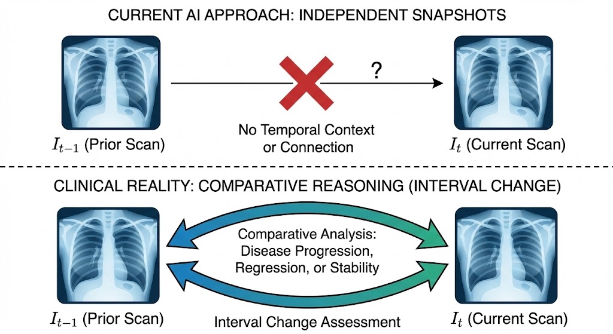

The contextual Limitation of Medical AI systems
Introduction | Slide 4
Current Paradigm
Most models treat studies as independent, cross-sectional snapshots ( Image -> Report ), ignoring patient history.
Clinical Reality
Radiology is longitudinal . Clinicians assess interval change ( t now vs t prior ) to determine progression or stability.
The Gap
Current AI implicitly assumes temporal independence, failing to track disease evolution (worsening vs. improving).

